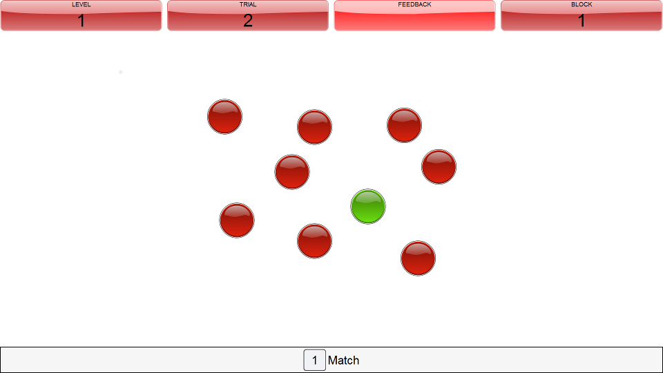

Instructions
What do you need to do?
You will see 9 red lights on the screen, just like in the first image below. These lights will turn green one at a time (like in the second image). You need to keep track of the lights that turn green. You need to press the '1' key whenever a light turns green and the light N times ago was the same one. So, when the level is one, you need to press the '1' key if the same light turns green twice in a row. But if the level is two then you need to press the '1' key if the current light was turned on two lights ago.

Remember to keep an eye on what the level is so that you know what matches to be looking out for. You will be notified whenever the level changes.